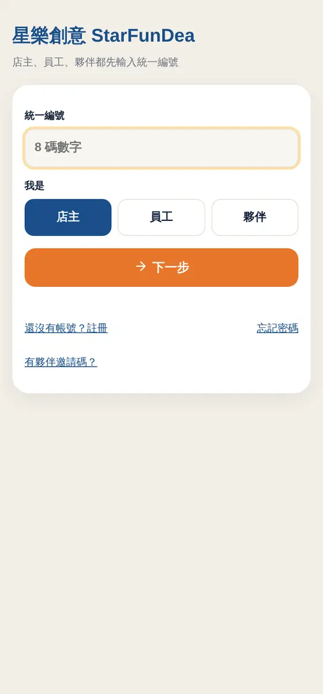

5.1
登入
第一次用，先登入你的店。
- 第一次用：打開「帳號已開通」信裡的連結（或在登入頁按「首次開通／忘記密碼」），輸入統一編號、收信箱的驗證碼，設定你自己的密碼，設好就直接登入。客服看不到這組密碼。
- 之後登入：打開網址（或手機桌面的 App 圖示），輸入統一編號和密碼，按「寄送驗證碼」。
- 到註冊時的信箱收 6 位數驗證碼（沒收到請看垃圾信件匣），輸入後登入。
- 登入後這支手機會記住你，下次直接進入。
- 夥伴（店內幫手）不用密碼：請店主在「帳號與訂閱」產生邀請連結，用手機打開並綁定即可。
小提醒驗證碼 5 分鐘內有效；連續輸錯 5 次會鎖 15 分鐘。

5.2
主畫面
登入後先看到主畫面，所有功能都是大按鈕。
- 功能分成六類：菜單、行銷、店務、財務、人員、設定與帳號。
- 按鈕右上角的小徽章是「現在要處理的事」，例如「1 件待處理」（待核准的請假、徵才登記）、「今日支出 4,380」。
- 夥伴只看得到菜單、行銷、店務、財務和打卡；人員、設定、帳號只有店主看得到。
- 每個功能頁左上角都有「主畫面」可以回來。

5.3
安裝成手機 App
把常用功能放在手機桌面，一點就開、全螢幕。
- iPhone：用 Safari 打開網址 → 點下方「分享」→「加入主畫面」。
- Android：用 Chrome 打開網址 → 右上角「⋮」→「安裝應用程式」。
- 員工打卡、店主管理、顧客菜單可以各裝一個圖示；功能更新時不用重裝。
小提醒如果打不開，請改用瀏覽器的「無痕分頁」；同時登入多個 Google 帳號有時會造成打不開。
5.4
店家設定精靈
第一次登入先花 3 分鐘設好店家資料，之後所有海報、名片、菜單都會自動帶入。
- 第 1 步：填店名、標語、地址（縣市下拉，只要填路和號）、電話（室內或行動分開填）、LINE ID（會自動產生官方網址）、營業時間。
- 第 2 步：上傳 Logo（系統會檢查解析度，並偵測底色）。
- 第 3 步：選配色（20 組範本，或自己選主色與強調色），右邊即時預覽。
- 想改，隨時回「設定精靈」。

5.5
Logo 與店家資料
店名、標語、配色、Logo，海報與名片都會用到。
- 主畫面「設定與帳號」→「Logo 與店家資料」。
- 「Logo」：上傳圖片，系統檢查解析度（太小會退件），並自動偵測底色。
- 「店家資料」：店名、標語、營業時間、海報底部的標籤，以及主色和強調色（有 20 組配色範本，點一下套用）。
小提醒Logo 建議長邊 1500 px 以上、背景去背的 PNG，印出來最清楚。
5.6
帳號、夥伴與訂閱
誰能用、用到什麼時候。
- 「帳號與訂閱」可以複製顧客網址、看訂閱狀態與到期日。
- 「店內夥伴」：輸入名稱，按「產生邀請連結」傳給對方；對方開啟後綁定那支手機。可以隨時「停用」。
- 「安全」：更改密碼；「登出所有手機」可以一鍵讓所有裝置重新登入。忘記密碼請到登入頁按「首次開通／忘記密碼」自己重設。
- 訂閱到期後：7 天寬限期照常使用，之後 90 天只能查看不能修改，再之後停用。
小提醒夥伴帳號最多 30 個。

5.7
系統寄出的信
重要的事都會寄信通知，一看就知道是誰寄的、要做什麼。
- 星樂創意寄給你的信：深藍頁首加星樂創意 Logo，例如登入驗證碼、帳號開通、收款確認、到期提醒。
- 寄給員工、應徵者的信：頁首是你的店名和店家主色，寄件人顯示「店名（SFD 代寄）」，例如員工入口、班表、請假結果、面試確認。
- 每封信只有一個主要按鈕，按下去就到要做的地方；驗證碼、金額、日期這些重點會放大顯示。
- 店務通知（顧客預訂、請假申請、面試登記、未打卡、交接、叫貨）會寄到「帳號」頁填的「通知信箱」；沒有填就寄到登入信箱。哪些要收，可以自己選（下一節）。
小提醒收不到信先看垃圾信件匣，並把寄件地址加入聯絡人。驗證碼 5 分鐘內有效。我們不會在信裡跟你要密碼。
5.8
選擇要收哪些通知信
不需要的提醒就關掉，那一類就不會寄信。
- 到「帳號」→「店家資料」，找到「通知信箱」下面的「要收到哪些通知信」。
- 有人送出時馬上寄給我：顧客預訂、異常回報、敲敲老闆、許願、員工請假申請、員工填好資料、面試登記。
- 系統定時自動寄：未打卡名單、預期排班已提醒、交接提醒、叫貨提醒。未打卡、交接、叫貨可以分開選「寄給我」和「寄給員工」。
- 取消勾選後按「儲存店家資料」就生效；想再收到，勾回來再儲存即可。
- 關掉通知不影響資料：顧客的預訂、員工的請假一樣會記錄，到系統裡都看得到。
小提醒預期排班提醒的日期、未打卡要等幾分鐘，在「人員與班表」→「② 班表」下方調整。登入驗證碼、開通、收款、到期提醒這類帳號安全與訂閱的信一定會寄，不能關。

5.9
分店管理（有多家店時）
總店統一管理，分店各自營業。
- 主畫面「設定與帳號」→「分店管理」：上傳分店清單 CSV，一次建立全部分店；各分店有自己的資料與顧客網址。
- 「品牌同步」：總店改了外觀、Logo、分類、菜單，按「預覽差異」確認後同步到分店（每家分店可以選要不要跟隨）。
- 每家分店可以設價格規則（跟總店同價、加減％或加減元），分店自己改的價格會被保留。
- 「跨店調價」與「跨店公告」可以一次處理所有分店。
5.10
遇到問題先看這裡
大部分狀況都可以自己解決。
- 網址打不開，出現「無法開啟這個檔案」：改用瀏覽器的「無痕分頁」打開；確認整串網址有複製完整。
- 收不到驗證碼：先看垃圾信件匣；等 1～2 分鐘再按一次。連續錯太多次要等 15 分鐘。
- 價格改了，別支手機沒變：夥伴手機約 15 秒同步；也可以重新整理頁面。
- 員工忘記 PIN：店主到「人員與班表」→「員工」→「編輯」，輸入新的 PIN 儲存，員工用新 PIN 登入；員工入口連結重新寄給他即可。
- 員工說沒收到信：先請他看垃圾信件匣；沒有填信箱的員工不會收到任何信，請改用電話或 LINE。
- 不小心記錯帳：剛記的 10 秒內按「撤銷」；之後店主到「今日」或「報表」分頁刪除。
- 我的資料存在哪裡？：存在你自己的 Google 試算表和雲端硬碟（包含員工證件與收據照片），你隨時可以打開來看。
- 訂閱到期了：到期後 7 天內照常使用，請盡快續訂；超過後只能看不能改。
- 想請我們協助：把畫面截圖和你做了什麼告訴我們，越清楚越快解決。